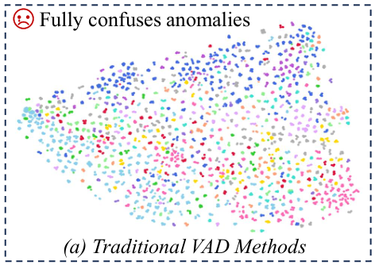
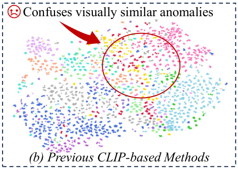
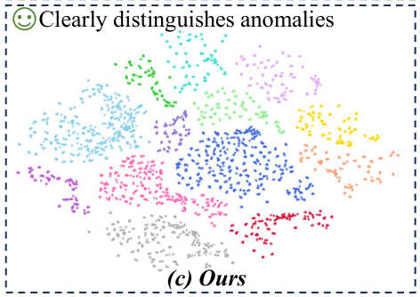
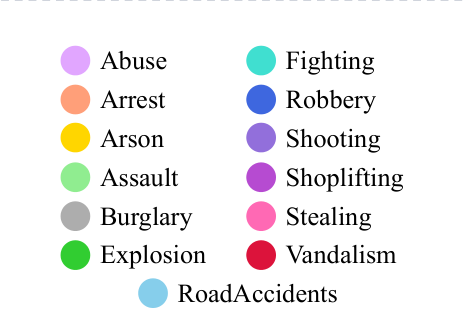
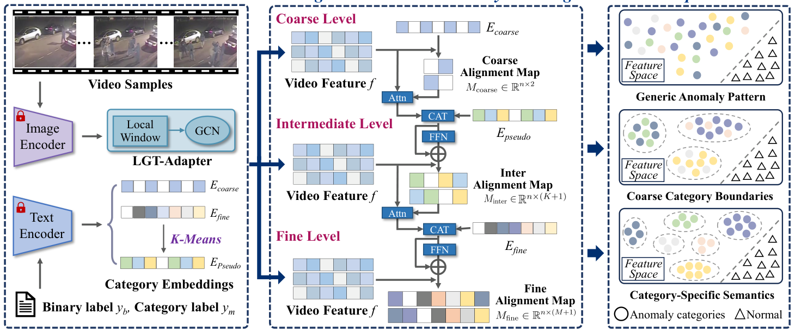
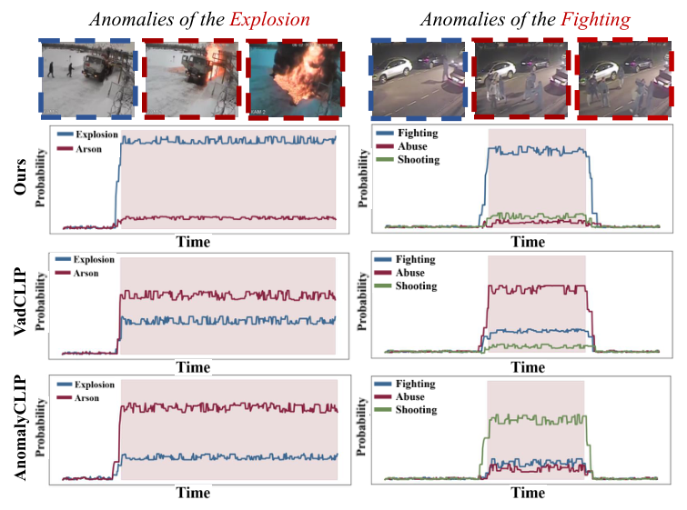

语义不同的异常共享「底层视觉基元」：纵火 ↔ 爆炸（火焰、烟雾），袭击 ↔ 斗殴（肢体冲突）——视觉特征彼此交织，类间边界模糊。
同类异常跨场景外观与尺度迥异：纵火既可能是角落里的纸团小火，也可能是开阔区域整辆车的剧烈燃烧。
核心观察：细粒度单类正样本有限，但「正常 / 异常」二值标注通用且充足 → 提出渐进式跨粒度学习，由粗到细引导特征空间演化。






UCF-Crime · XD-Violence
均为公开基准
单卡 RTX 4090 · Batch 64
共训练 10 个 Epoch
Frozen CLIP ViT-B/16
+ 公开的 LGT-Adapter
未检索到官方开源实现
可基于 VadCLIP 复现核心模块
「粗级对比聚流形 + 中间层无损失软引导 + 细级同簇加权交叉熵」——这套应对弱监督类别稀疏的组合策略，可直接尝试迁移到组内弱监督 / 开集异常检测 Baseline。
本文宏类划分依赖离线的文本 Prompt K-Means，而文本先验与视频视觉特征存在域差；可探索多模态对齐或最优传输（OT），实现视觉-文本动态自适应聚类。
方法预设每段视频仅含一种主导异常；真实安防中「车祸 + 起火」等复合事件常见。单路径跨层级注意力如何扩展为多标签并发检测，是值得深入的研究切入点。